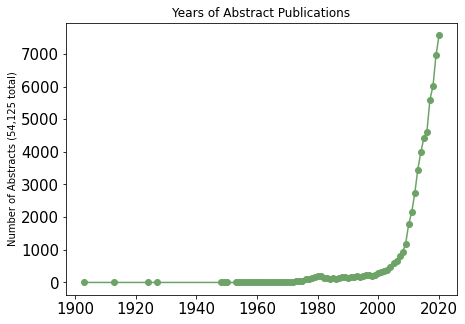
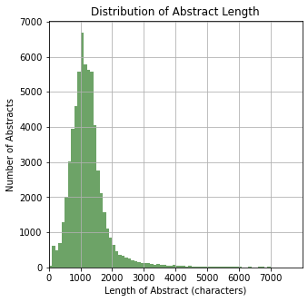
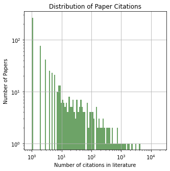
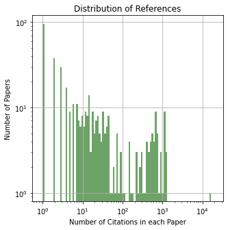
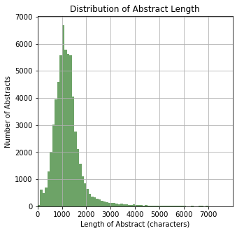
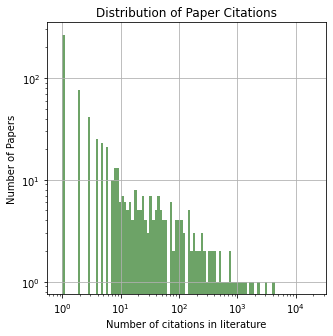
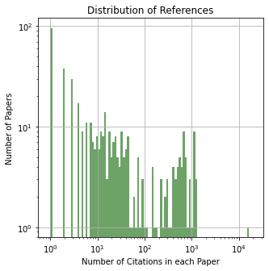
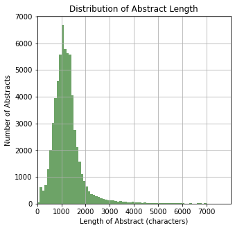
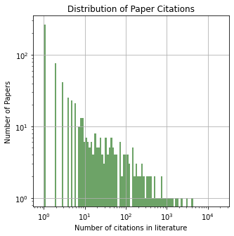
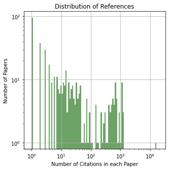

Storing energy from intermittent renewables, such as wind and solar, is one of the most pressing challenges we face for enabling a sustainable civilization.
A wide array of energy storage technologies are under development, each with their own advantages and disadvantages for various use cases.
Scientific research into energy storage technologies has exploded in recent years and sorting through this large body of knowledge to understand the state of field
is an important and challenging problem.
As the need for clean, sustainable energy has become more imperative, the amount of research in the field of energy storage has skyrocketed.

The plot above shows the distribution of publication year for the papers in our dataset, and it clearly demonstrates that the body of research is expanding at an unprecidented rate.
While this increase is a good thing, it makes it very difficult to maintain a high-level understanding of the state of the field and to stay aware of what progress is being made.
This lack of insight can lead to redundant research, inefficient investing of time and money, and oversight of areas with the greatest potential.
The Goal
This project uses a variety of natural language processing techniques to extract insights from the scientific literature with the goal of being able to better direct research
efforts and investments towards promising technologies.
While it's nearly impossible for any individual to read through the tens of thousands of papers found in our dataset, recent AI technology has the power to process all this
data and more and to extract insights without the constraints of human pre-conceived ideas of what is or is not important.
Furthermore, the machine learning techniques we use may find patterns and connections between different areas of the field that humans might not be able to recognize on their own.
We have ultimately generated two interactive plots to allow researchers to explore the learned models of the field of energy storage. (More details on techniques in the sections below)
The first plot shows a graph of topics extracted from the abstracts in our dataset.
Researchers can click on topics and find related papers and information about topic trends. They can also look at the connections between topics and find papers and trends at the intersection of topics.
The second plot zooms in further to look at the relationships between individual key words in the data.
It allows researcher to explore embedded words from our data projected onto a 2D plane, and use word-vector math to look at relationships between different words (details on this in the Word2Vec section).
The Data
The data is composed of ~60,000 abstracts of scientific papers related to energy storage.
The papers were pulled from the Semantic Scholar Open Research Corpus database of scientific papers for natural language processing.
Our models were trained on 54,125 abstracts from scientific papers relating to energy storage pulled from the Semantic Scholar Open Research Corpus.
The corpus is a collection of research papers published in all fields in a JSON archive designed for ease of use in natural language processing tasks.
The corpus is rich with metadata including the fields of study the abstract is from, authors, years published, and the in-citations
(papers that cite the current paper) and the out-citations (papers cited by the current paper). The plots below give an overview of these features for our dataset.



To cultivate our dataset, we pulled all abstracts from the entire semantic scholar dataset with the search term "Energy Storage" in the title or abstract. (extract_papers_semantic.py).
Then we processed the the raw text. First, we excluded papers in any language that wasn't english.
Then we removed stop words, which are commonly used words in the english language that carry very little useful information for natural language processing such as (the, a, is, are) and punctuation.
Since many of the papers in our database are related to chemical and material engineering, we used the
mat2vec processing library
to standardize the representation of checmical formulas. For example, converting all instances of "Lithium" to "li" to avoid redundancy.
We used WordNetLemmatizer which converts words to their meaningful base form while also considering the context.
For example, the words "cycle", "cyclic", "cycled", and "cycling" would all be converted to "cycl".
"""Porter stemming?""
The result is the processed text we use to train our models. (???text_process or text_process_semantic?)
Description:
Topic modeling is a machine learning problem where you have a collection (corpus) of documents, and you want to extract topics from the unstructured text data.
In our case, our corpus is the set of abstracts pulled from Microsoft Academic, and we want to extract topics of interesting research from these texts.
Once we've extracted these topics, we create a graph of topics where each node is a topic and each edge represents the probability of these topics co-occuring in an abstract.
Different features of the graph convey further information about how prevelant a topic is or how frequently it has shown up in abstracts in the past five years.
Goal:
The goal of this modeling and visualization is to algorithmically produce a high-level overview of the field and
to allow users to interactively explore different topics and the connections between them.
We hope this provides insight into surprising connections between different areas of the field or trending topics of interest.
This visualization can also be used to explore literature in the field related to each topic or their connections.
Algorithms:
This visualization relies primarily on two techniques: Latend Dirichlet Allocation and Louvain Community Detection.
Latent Dirichlet Allocation (LDA) is a popular algorithm used for topic modeling.
It models topics as probability distributions over words.
( ex: the topic of "pets" has a high probability of containing the word "cat" and a low probability of containing the word "solar_panel". )
Topics can be represented by the words that have the highest probability of belonging to the topic. Furthermore, each document has a certain probability of containing each topic.
( ex: An article about healthy pet diets has a high probability of containing the topics "food", "pets", and "health" and a low probability of containing the topic "energy_storage.")
We performed topic modeling with 100 topics and then produced a graph where nodes represent topics and edges represent the probability of topics occuring in the same document.
( ex: the topics "health" and "food" are more likely to co-occur than "pets" and "energy_storage".)
Even more in depth discussion of LDA.
Louvain Community Detection
The Louvain Community Detection algorithm is used on large intereconnected graphs to separate nodes into related groups or communities.
It starts out by defining each node as an individual community.
It then uses a similarity metric to compare adjacent nodes, and if they are similar enough, it merges the two communities.
When it has gone through every node, it creates a new graph in which each community is a single node.
It repeats this process until no nodes are similar enough to merge.
The end result is a grouping of similar nodes into research communities.
These are represented by the colors of the nodes in our graph.
Even more in depth discussion of Louvain community detection.
Description:
In natural language processing, words are often embedded into a numerical vector that encodes the meaning of the words.
The embeddings are learned from the context and surrounding words using machine learning algorithms.
These word vectors can be conceptualized as a point in high dimensional space.
We can easily compare how close these vectors are in high dimensional space, giving us a good idea of how similar the words are.
We then projected these words onto a two dimensional plane so that we could spacially visualize the relationships between different words.
Another cool feature of word vectors is that you can do math with them.
By adding and subtracting vectors, you can search for relevant words. ex: if you take the embedding of "King" and subtract the embedding of "Man", the resultant vector represents the relationship between "King" and "Man".
If you then add this new vector to the embedding of "Woman", the resulting vector is most similar to the embedding of "Queen".
Goal:
The goal of this visualization is to be able to choose words out of the collection of abstracts and explore their relationships either by
seeing how close they are on the two dimensional visualization, or my experimenting with vector math.
Algorithms:
This visualization relies primarily on two techniques: Word2Vec and Principal Component Analysis.
Word2Vec
Word2vec is a word embedding technique that uses a neural network to learn word associations from a large corpus of text.
For each word, it uses the current word embedding to try to predict the words in some window around it.
When it incorrectly predicts a word, it uses the error to update the word embedding and improve.
The end result is a word embedding for each word in the corpus that is learned from the context of surrounding words.
Even more in depth discussion of Word2Vec.
Principal Component Analysis (PCA)
is a dimensionality reduction technique that projects points in higher dimensions into a lower dimensional space.
Each of the word vectors are 200 dimensional, but we can visualize at most 3 dimensions, and in this case, we want to view the vectors on a 2D screen.
There are many different ways you could project down to 2D, but we want to choose the one that preserves as much of the initial information as possible.
PCA uses linear algebra to find the projection that preserves the most variance/relevant information so that we can visualize these 200D vectors on a 2D screen without losing too much information.
Work done by Bryce Elizabeth Yahn and Lee Aspitarte in 2021. Built upon work by Raihan Ahmed and Lee Aspitarte in 2020.
Lee Aspitarte received his Bachelor of Science in physics from Washington State University, Washington, U.S., in 2011 and his
PhD in physics from Oregon State University, Oregon, U.S., in 2017. From July to October of 2017, he was a Postdoctoral Researcher with the National Energy Technology
Laboratory. Since 2017, he has been a Principal Research Scientist with Battelle, under the U.S. Department of Energy, at the National Energy Technology Laboratory
in Albany, Oregon. His interests include experimental research in the field of magnetohydrodynamic power generation and its associated subfields.
Dr. Aspitarte’s awards and honors include the Ben and Elaine Whiteley Materials Research Fellowship (Oregon State University) and the Peter Fontana Outstanding Graduate
Teaching Assistant Award (Oregon State Department of Physics).
Bryce Elizabeth Yahn Bryce is a recent graduate of University of Rochester where she earned a bachelor of science in brain and cognitive sciences
with a minor in mathematics. She has participated in four research programs on her journey from studying the brain to working in the field of data science and artificial intelligence.
She has conducted neuroscience research at the MIT Summer Research program, studied eye movements and attention in Berlin at Humboldt Universitat, and completed machine vision research
at University of Rochester. She is now gaining experience with natural language processing and data visualization working with the Department of Energy to better understand the vast
body of scientific literature relating to renewable energy storage. In September, she will be moving to Arlington, VA to start a data science position working in Leidos’s AI and
machine learning accelerator group. She is passionate about making STEM an inclusive and welcoming field for everyone and hopes to continue working towards that cause in every position
she takes. Outside of work, she is an avid rock climber, and likes to push herself to new heights by facing her fears and challenging herself every day. She is also interested in
photography. She won a scholarship for a tuition free fifth year of college to study how photography can shape our perspectives and world views.
Raihan Ahmed was a rising senior pursuing his Bachelor of Science in computer science and minor in linguistics at Northeastern Illinois
University in Chicago, IL at the time of this work. Raihan intends to pursue a PhD in computer science or linguistics. From 2017 to 2018, he was an undergraduate
research assistant at the University of Illinois at Urbana-Champaign’s (UIUC) College of Agricultural, Consumer, and Environmental Sciences, as well as a teaching
assistant and academic tutor with UIUC’s Department of Physics. Between 2018 and 2019, he was an information systems and technology co-op student with Apple.
Since then, he has been a research fellow at the National Energy Technology Laboratory in Albany, Oregon. Mr. Ahmed’s awards and honors include the Mickey Leland
Energy Fellowship (Oak Ridge Institute for Science and Education).
 




